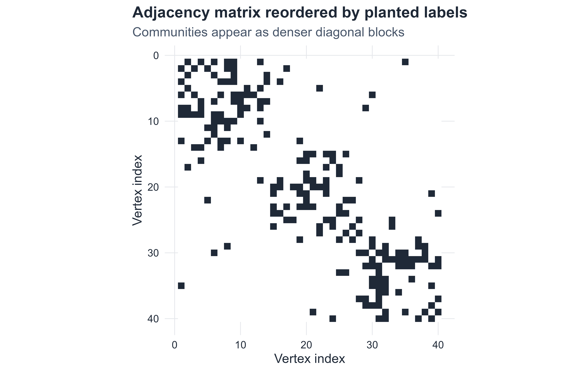
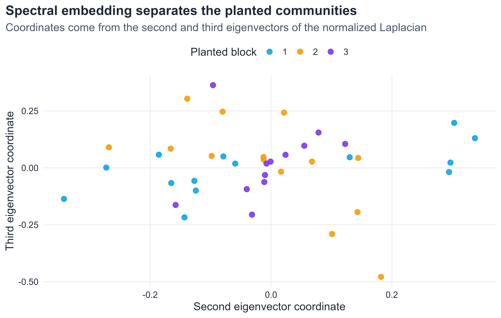
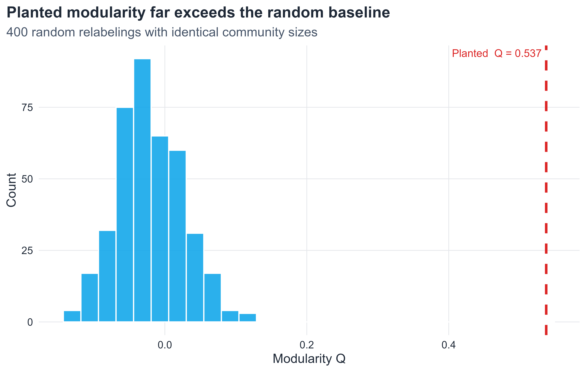
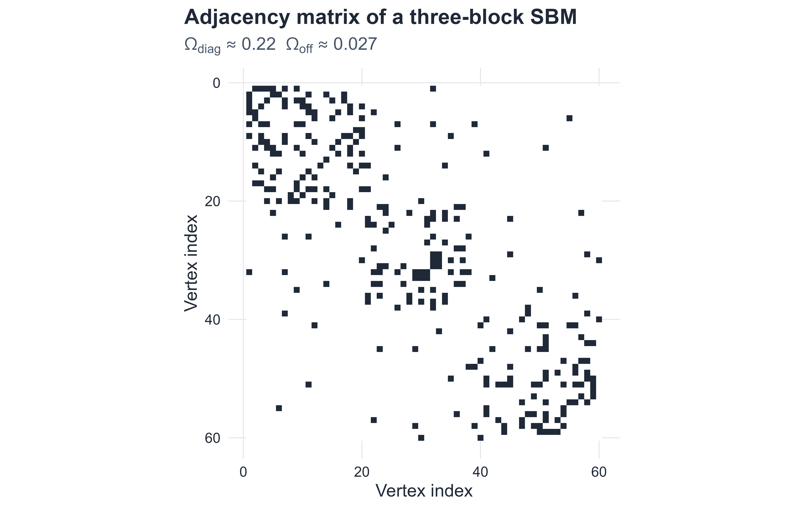
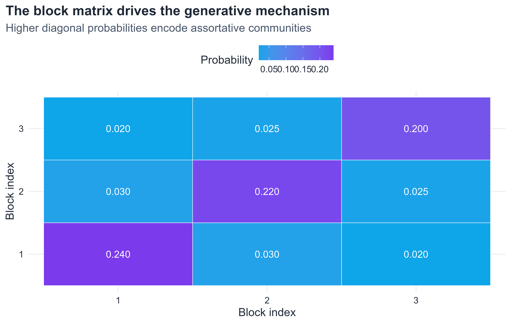
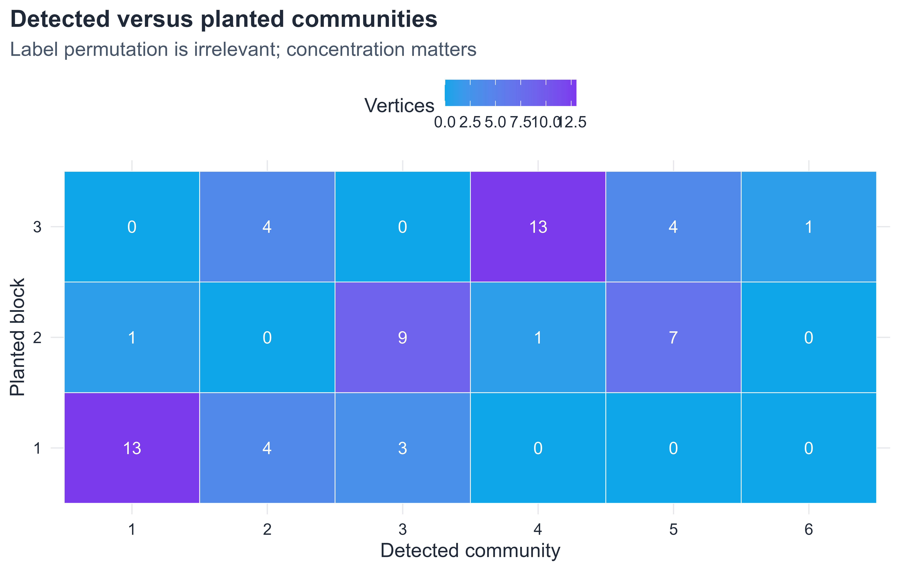
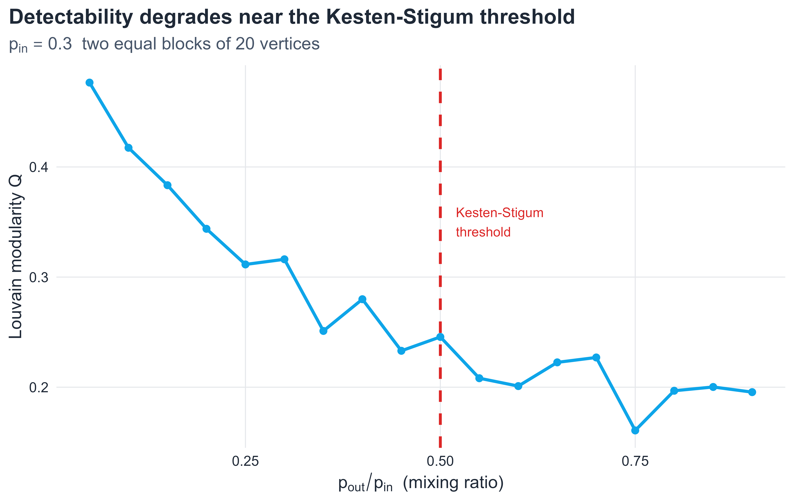

Mesoscopic Organization, Graph Cuts, Spectral Methods, Modularity, and Statistical Inference
9.1 Introduction
After learning how random graphs generate baseline connectivity, how scale-free networks create hubs, and how small-world networks combine clustering with short paths, we now move to a different question: how do vertices assemble into modules or communities? In many real networks, the most informative structure is neither purely local nor purely global. Instead, it lives at an intermediate, mesoscopic scale. Social networks split into circles of friends, scientific collaboration networks split into research specialties, gene regulatory networks contain functional modules, and transportation networks organize into regional clusters. Community structure is therefore a canonical example of mesoscopic organization in complex systems (Barabási and Pósfai 2016; Girvan and Newman 2002; Fortunato 2010).
In the language of network science, a community is a group of vertices that connect to one another more densely than to the rest of the graph. Yet this simple intuition immediately surfaces a fundamental difficulty: there is no unique, universally accepted mathematical definition of a community. Different definitions formalize different aspects of mesoscale cohesion. Some methods minimize sparse cuts between groups, some maximize a null-model deviation (modularity), and some treat block membership as a latent variable to be inferred from a probabilistic generative model (Fortunato 2010; Newman 2010). Each approach answers a slightly different question, and each inherits different assumptions, computational characteristics, and failure modes.
For master-level study, this plurality is not a problem to be avoided but a theoretical richness to be explored. The present chapter therefore develops community detection in stages: from informal intuition, through rigorous graph-cut quantities and spectral theory, through modularity and its optimization, to the stochastic block model as a full statistical inference framework. The chapter closes with a treatment of detectability limits that connects community structure to information theory, and with guidelines for honest interpretation of empirical results.
9.2 Chapter roadmap
This chapter develops in the following order.
Formal definitions: graphs, partitions, and notation
Why communities are mesoscale and not local or global properties
The distinction between clustering coefficient and community structure
Internal density, cut size, volume, and conductance
Cheeger’s inequality and the spectral geometry of cuts
The graph Laplacian, the Fiedler vector, and spectral clustering
Bridge edges and the Girvan–Newman divisive algorithm
Modularity: derivation from null-model first principles and spectral formulation
Fast optimization: Louvain and the Leiden algorithm
The stochastic block model: likelihood, maximum-likelihood estimation, and EM outline
The degree-corrected stochastic block model
The Kesten–Stigum detectability threshold and its information-theoretic meaning
Comparing partitions: normalized mutual information, adjusted Rand index, and variation of information
Limitations: resolution limit, overlapping communities, and benchmark dependence
A practical workflow for empirical community analysis
9.3 Learning goals
By the end of this chapter, a student should be able to:
define a graph partition formally and explain what makes a subset a good community candidate;
state and apply the definitions of cut size, volume, conductance, and internal density;
state Cheeger’s inequality and explain what it connects;
construct the (unnormalized and normalized) graph Laplacian and relate its eigenvalues to graph connectivity;
describe spectral clustering and its connection to the normalized cut;
explain the modularity null model, derive the community-level expression, and connect it to the modularity matrix eigenvalue problem;
describe the Louvain heuristic and explain why the Leiden algorithm was proposed as an improvement;
write down the likelihood of the stochastic block model, derive the maximum-likelihood estimator for \Omega, and outline the EM algorithm;
state the Kesten–Stigum threshold and explain why detectability failure is an information-theoretic impossibility, not merely a computational one;
compute and interpret NMI, ARI, and variation of information between two partitions;
discuss the resolution limit, overlapping communities, and benchmark-dependence as fundamental limitations.
9.4 Formal preliminaries: graphs, partitions, and notation
Throughout this chapter, let G = (V, E) be a simple, undirected, connected graph with n = |V| vertices and m = |E| edges. The adjacency matrix is A \in \{0,1\}^{n \times n} with A_{ij} = 1 if \{i,j\} \in E. The degree of vertex i is k_i = \sum_j A_{ij}, and \mathbf{k} = (k_1,\ldots,k_n)^T denotes the degree sequence. The degree matrix is D = \mathrm{diag}(k_1,\ldots,k_n). The total number of edge endpoints satisfies \sum_i k_i = 2m.
A partition of V into q communities is a collection \mathcal{C} = \{C_1, C_2, \ldots, C_q\} satisfying
C_r \cap C_s = \emptyset \;\text{ for } r \neq s, \qquad \bigcup_{r=1}^q C_r = V.
The assignment functionz: V \to \{1,\ldots,q\} maps each vertex to its community label, so z_i = r means vertex i belongs to C_r. For a subset S \subseteq V, write \bar{S} = V \setminus S.
For community C_r, define:
n_r = |C_r|, the number of vertices;
m_r = \bigl|\{(i,j)\in E : i \in C_r,\, j \in C_r\}\bigr|, the number of internal edges;
\ell_r = \bigl|\{(i,j)\in E : i \in C_r,\, j \notin C_r\}\bigr|, the number of boundary edges (cut edges from C_r);
\mathrm{vol}(C_r) = \sum_{i \in C_r} k_i, the volume.
9.5 Why communities matter
A useful analytical decomposition separates structural questions by scale:
at the local level: degree, triangles, and clustering around individual vertices;
at the global level: diameter, giant components, and overall connectivity;
at the mesoscopic level: whether V decomposes into intermediate-scale modules.
Community structure belongs to the third category. It is therefore not visible from degree distribution alone, and it cannot be captured by a single global scalar such as average path length. Two networks can share the same degree distribution and the same global density while differing profoundly in their block organization (Barabási and Pósfai 2016; Fortunato 2010). This scale separation is precisely why community detection requires its own mathematical machinery.
In applications, a community can correspond to social role, biological function, thematic topic, geographic proximity, or hidden constraints in the formation process. Community analysis therefore transforms a large, difficult graph into an interpretable map of meso-level structure.
9.6 Communities are not the same as clustering
This distinction is pedagogically essential.
The clustering coefficient of vertex i is a local quantity:
c_i = \frac{\text{number of closed triangles centered at } i}{\binom{k_i}{2}},
measuring the probability that two neighbors of i are also neighbors of each other. Community structure, by contrast, is a mesoscopic quantity concerning whether groups of vertices cohere internally relative to their connections with the rest of the graph. A graph can have high average clustering without a clear block partition, and it can have a strong block partition without especially high local clustering.
Illustrative examples. A ring lattice has high local clustering because neighbors are spatially proximate and tend to connect, but its community structure is spatially smooth and not naturally partitioned into sharply separated modules. Conversely, a graph consisting of two moderately sparse cliques connected by a single bridge will have only moderate local clustering (interior vertices of each clique form triangles, but bridge-adjacent vertices do not), yet the two-community partition is visually and quantitatively obvious.
NoteKey distinction
The clustering coefficient asks whether the neighborhood of a single vertex is internally dense. Community detection asks whether the graph decomposes into groups whose internal connectivity substantially exceeds their external connectivity. These are genuinely different questions.
9.7 A first synthetic example: planted communities
Before defining algorithms, it is valuable to construct a graph whose mesoscale structure is known in advance. The planted partition model (a special case of the stochastic block model treated formally later) assigns each vertex to a block and generates edges independently: edge probability p_{\mathrm{in}} for vertex pairs within the same block, and p_{\mathrm{out}} \ll p_{\mathrm{in}} for pairs in different blocks.
Figure 9.1: A synthetic graph with three planted communities. The within-block edge probability (p_{\mathrm{in}} = 0.32) substantially exceeds the between-block probability (p_{\mathrm{out}} = 0.025), producing visible mesoscale structure.
A second view, often more informative for matrix-analytic methods, is the reordered adjacency matrix.
Show code
A_planted <-as.matrix(igraph::as_adjacency_matrix(g_planted, sparse =FALSE))ord_planted <-order(as.integer(igraph::V(g_planted)$block))A_ord <- A_planted[ord_planted, ord_planted]adj_df <-as.data.frame(as.table(A_ord)) |> dplyr::rename(row = Var1, col = Var2, edge = Freq) |> dplyr::mutate(row =as.integer(row), col =as.integer(col))ggplot2::ggplot(adj_df, ggplot2::aes(x = col, y = row, fill =factor(edge))) + ggplot2::geom_tile() + ggplot2::scale_fill_manual(values =c("0"="white", "1"= course_cols$ink), guide ="none") + ggplot2::scale_y_reverse() + ggplot2::coord_fixed() + ggplot2::labs(title ="Adjacency matrix reordered by planted labels",subtitle ="Communities appear as denser diagonal blocks",x ="Vertex index", y ="Vertex index" )

Figure 9.2: Adjacency matrix of the planted graph after reordering vertices by block label. Community structure manifests as denser diagonal blocks separated by sparse off-diagonal regions.
The matrix view in Figure 9.2 motivates the stochastic block model: the planted partition is designed so that the adjacency matrix has an approximate block structure, which the SBM formalizes as a statistical generative model.
9.8 Quantifying a candidate community
Visual intuition must be complemented by mathematics. For a subset S \subseteq V, we introduce four complementary quantities.
the fraction of possible edges within S that are actually present. High internal density is necessary but not sufficient for a meaningful community: a very small dense clique surrounded by a large sparse graph may have \rho_{\mathrm{in}} \approx 1 while being an isolated fragment rather than a coherent module.
A small cut is necessary for S to be a well-separated community. However, minimizing the cut alone is problematic: the global minimum of \mathrm{cut}(S,\bar{S}) over all non-trivial bipartitions is often achieved by a very small S, such as a single vertex or a low-degree pair. This motivates normalization by size or degree.
Volume and conductance
Define the volume of S:
\mathrm{vol}(S) = \sum_{i \in S} k_i.
Note that \mathrm{vol}(V) = 2m. The conductance of S is then
Conductance takes values in [0,1] and is small when S has a sparse boundary relative to its internal degree mass. It penalizes both small isolated sets and sets with excessively large boundaries, making it arguably the most natural cut-based quality measure for a community.
The conductance \phi(G) is NP-hard to compute exactly. A profound result from spectral graph theory provides both an efficient approximation and a deep connection between geometry and the eigenspectrum.
NoteTheorem (Cheeger’s inequality)
Let \lambda_2 be the second-smallest eigenvalue of the normalized Laplacian\mathcal{L} = D^{-1/2} L D^{-1/2} (defined below). Then
The lower bound is due to Cheeger and Buser (Chung 1997), and the upper bound is constructive: the sweep algorithm on the second eigenvector of \mathcal{L} finds a cut achieving \phi \leq \sqrt{2\lambda_2}. Cheeger’s inequality is fundamental because it shows that a small spectral gap \lambda_2 \approx 0 is both necessary and sufficient (up to a square root) for the existence of a sparse cut. A graph with well-separated communities must have a small \lambda_2.
9.9 Graph Laplacian and spectral community detection
Cheeger’s inequality tells us something deeper than a technical bound: a good community split is not only a combinatorial object, but also a spectral one. In other words, when a graph contains two weakly connected regions, that structural bottleneck leaves a trace in the eigenvalues and eigenvectors of the Laplacian. This is the real reason the Laplacian enters the story. We are not changing the problem; we are changing its language from discrete cuts to continuous geometry.
The educational payoff is important. A raw cut asks us to search over an exponential number of vertex subsets, whereas a spectral relaxation replaces that search by an eigenvector problem. The resulting vectors are not yet communities themselves, but they provide coordinates that reveal where the graph is easiest to separate. The rest of this section develops that logic in stages: first the Laplacian, then the normalized cut objective, then the spectral embedding that turns vertices into points in Euclidean space.
The unnormalized Laplacian
The unnormalized graph Laplacian is
L = D - A.
Its basic properties are:
L is symmetric positive semi-definite: \mathbf{x}^T L \mathbf{x} = \sum_{\{i,j\}\in E}(x_i - x_j)^2 \geq 0 for all \mathbf{x} \in \mathbb{R}^n.
L \mathbf{1} = \mathbf{0}, so \mathbf{1} is an eigenvector with eigenvalue 0.
The multiplicity of eigenvalue 0 equals the number of connected components of G.
The second eigenvalue \lambda_2(L) is the algebraic connectivity (or Fiedler value) of G. It measures how well-connected the graph is: \lambda_2 = 0 if and only if G is disconnected; a large \lambda_2 implies strong connectivity and therefore, by Cheeger, large conductance.
The corresponding eigenvector \mathbf{v}_2 is the Fiedler vector. A classical result is that thresholding \mathbf{v}_2 at its median value produces a bipartition of V with conductance bounded by \sqrt{2\lambda_2}. This is the geometric idea behind spectral bipartitioning.
The normalized Laplacian
The normalized (or symmetric) Laplacian is
\mathcal{L} = D^{-1/2} L D^{-1/2} = I - D^{-1/2} A D^{-1/2}.
Its eigenvalues lie in [0,2], and the normalized Laplacian appears naturally in random-walk analysis: the transition matrix of the simple random walk on G is P = D^{-1} A = I - D^{-1} L, so \mathcal{L} and P share the same eigenvectors (up to the D^{1/2} transformation).
The normalized cut and its spectral relaxation
For a bipartition (S, \bar{S}), the normalized cut is
Unlike the raw cut, the normalized cut is large when either part of the partition is small in degree-volume. Minimizing NCut over all bipartitions is NP-hard, but it has a natural spectral relaxation. Define the indicator \mathbf{f} \in \mathbb{R}^n with f_i = \sqrt{\mathrm{vol}(\bar{S})/\mathrm{vol}(S)} if i \in S and f_i = -\sqrt{\mathrm{vol}(S)/\mathrm{vol}(\bar{S})} if i \in \bar{S}. Then
where \tilde{\mathbf{f}} = D^{1/2} \mathbf{f}, under the constraint \tilde{\mathbf{f}}^T D^{1/2}\mathbf{1} = 0. Relaxing \tilde{\mathbf{f}} from a discrete vector to a continuous one and applying the Rayleigh quotient, the minimum is achieved by \tilde{\mathbf{f}} = \mathbf{v}_2(\mathcal{L}), the second eigenvector of \mathcal{L}. This is the spectral relaxation of normalized cut(Shi and Malik 2000).
Why the spectral relaxation helps
The crucial approximation step is the relaxation from a discrete indicator vector to a continuous one. That move may seem abstract at first, so it helps to read it operationally. A discrete partition forces each vertex to belong entirely to one side of a cut. The relaxed eigenvector problem instead allows vertices to take continuous coordinates, and these coordinates measure how strongly each vertex is aligned with one side or the other of a low-conductance split. Vertices with similar coordinates are difficult to separate without paying a cut penalty; vertices with very different coordinates naturally belong to different sides.
For two communities, the sign and magnitude of the Fiedler vector already contain most of the geometric information. For more than two communities, we keep several leading eigenvectors and let them define an embedding of the vertices into a low-dimensional Euclidean space. Community detection is then performed in that embedded space rather than directly on the graph.
Spectral clustering algorithm
The full spectral clustering algorithm for q communities proceeds as follows.
NoteAlgorithm: Spectral Clustering
Input: graph G with n vertices, target number of communities q.
Compute \mathcal{L} = D^{-1/2}(D-A)D^{-1/2}.
Find the q smallest eigenvectors \mathbf{v}_1, \ldots, \mathbf{v}_q of \mathcal{L}.
Form the matrix U \in \mathbb{R}^{n \times q} with columns \mathbf{v}_1, \ldots, \mathbf{v}_q.
Row-normalize U: let \tilde{u}_{ir} = u_{ir} / \|\mathbf{u}_{i\cdot}\|.
Treat each row \tilde{\mathbf{u}}_{i\cdot} as a point in \mathbb{R}^q and apply k-means clustering with k = q.
The row normalization in step 4 projects vertices onto the unit sphere, which makes k-means more geometrically stable when block sizes and densities differ. The spectral embedding maps the discrete combinatorial structure of G onto a continuous Euclidean space where standard clustering applies (Ng, Jordan, and Weiss 2002; Luxburg 2007).
Show code
A_planted <-as.matrix(igraph::as_adjacency_matrix(g_planted, sparse =FALSE))D_planted <-diag(rowSums(A_planted))Lsym_planted <-diag(nrow(A_planted)) -diag(1/sqrt(pmax(diag(D_planted), 1e-12))) %*% A_planted %*%diag(1/sqrt(pmax(diag(D_planted), 1e-12)))eig_planted <-eigen(Lsym_planted, symmetric =TRUE)embed_df <- tibble::tibble(x = eig_planted$vectors[, 2],y = eig_planted$vectors[, 3],block = igraph::V(g_planted)$block)ggplot2::ggplot(embed_df, ggplot2::aes(x = x, y = y, color = block)) + ggplot2::geom_point(size =2.6, alpha =0.9) + ggplot2::scale_color_manual(values = palette_blocks) + ggplot2::labs(title ="Spectral embedding separates the planted communities",subtitle ="Coordinates come from the second and third eigenvectors of the normalized Laplacian",x ="Second eigenvector coordinate",y ="Third eigenvector coordinate",color ="Planted block" )

Figure 9.3: Two-dimensional spectral embedding of the planted graph. Vertices are colored by planted block. The Laplacian does not recover communities by directly cutting edges one by one; instead, it places vertices with similar structural roles close together in an embedding space, where standard clustering becomes feasible.
As shown in Figure 9.3, the Laplacian-based embedding converts a graph partitioning problem into a geometric clustering problem. This is the point that is easy to miss if one sees only the eigenvector formulas: the eigenvectors are useful because they supply coordinates in which structurally similar vertices become spatially close.
Spectral clustering has the following important properties:
It is computationally efficient for sparse graphs: the dominant cost is the partial eigendecomposition, which can be done in O(n \cdot q) time using iterative methods.
It requires specifying q in advance, unlike modularity-maximization methods.
The quality of the approximation degrades gracefully as \lambda_{q+1} - \lambda_q (the eigengap) shrinks, which provides a natural diagnostic: a large eigengap suggests q is a good choice.
9.10 Bridge edges and the Girvan–Newman algorithm
The first historically influential modern algorithm for community detection is due to Girvan and Newman (Girvan and Newman 2002). Its central intuition is that communities are held apart by a comparatively small number of bridge edges. Identifying and removing those bridges should reveal the modular structure.
Edge betweenness
For an edge e = \{u,v\}, the edge betweenness centrality is
where \sigma_{st} is the total number of shortest paths between s and t, and \sigma_{st}(e) is the number of those shortest paths that use edge e. A bridge between two dense communities lies on many shortest paths between vertices in different communities and therefore acquires high betweenness.
This can be made precise: if G consists of two cliques of size n/2 connected by a single bridge e^*, then B_{e^*} = (n/2)^2 while interior edges have betweenness at most O(n). In general, the betweenness of an intercommunity edge grows with the product of community sizes it separates.
Figure 9.4: Edges in the top decile of edge betweenness highlighted in red. In a planted partition graph, high-betweenness edges concentrate between communities rather than deep inside them.
The divisive algorithm
The Girvan–Newman algorithm is divisive: it repeatedly removes the highest-betweenness edge and recomputes betweenness on the modified graph.
NoteAlgorithm: Girvan–Newman
Input: graph G.
Compute B_e for all edges using Brandes’ algorithm in O(nm) time.
Remove the edge e^* = \arg\max_e B_e.
Recompute B_e on the modified graph.
Repeat steps 2–3 until all edges have been removed or a stopping criterion is met.
The hierarchy of splits produces a dendrogram; cut at a level that maximizes modularity or satisfies a domain criterion.
Output: hierarchical partition tree (dendrogram).
The algorithm is O(n m^2) in the worst case (or O(n^2 m) for sparse graphs), making it computationally prohibitive for large networks. Its chief value is pedagogical and conceptual: it demonstrates that community boundaries coincide with edges that carry large amounts of global routing, an insight that motivates both the modularity and the SBM approaches.
Figure 9.5: Partition returned by the Girvan–Newman algorithm on the planted graph. The algorithm recovers the planted structure because bridge edges between the three communities concentrate in the top betweenness decile.
9.11 Modularity: null-model viewpoint and spectral formulation
Instead of removing bridges, a complementary approach asks whether a proposed partition contains more within-community edges than one would expect by chance given the degree sequence. This is the modularity framework (Newman and Girvan 2004; Newman 2006).
Derivation from the configuration model null
The configuration model generates a random graph with prescribed expected degrees by connecting pairs of edge stubs uniformly at random. Under this null model, the probability of an edge between i and j is approximately
p_{ij}^{\mathrm{null}} = \frac{k_i k_j}{2m},
which preserves the expected degree of every vertex while otherwise randomizing connectivity (Newman 2010). The expected adjacency matrix of the null model has entries k_i k_j / (2m), and the modularity matrix is the deviation of the observed adjacency from this expectation:
B_{ij} = A_{ij} - \frac{k_i k_j}{2m}.
Note that B\mathbf{1} = \mathbf{0} because \sum_j B_{ij} = k_i - k_i \sum_j k_j/(2m) = k_i - k_i = 0.
The modularity formula
For a partition \{c_i\}, modularity is the normalized total excess of internal edges over the null expectation:
where \delta(c_i, c_j) = \mathbf{1}[c_i = c_j]. Modularity Q \in (-1, 1), with Q = 0 corresponding to a partition no better than the null model and Q close to 1 indicating strong community structure.
Community-level expression: derivation
Starting from the pairwise formula, we derive an equivalent expression in terms of community-level quantities. Define
This form makes the null-model comparison transparent: for each community r, we compare the observed internal edge fraction e_{rr} to the fraction a_r^2 expected if edges were placed at random with the correct degree distribution. Communities that capture more internal edges than expected contribute positively to Q.
Spectral formulation and the modularity matrix eigenvalue problem
For a bipartition into two communities with assignment vector s_i \in \{+1, -1\}, write \delta(c_i,c_j) = (s_i s_j + 1)/2. Then
Q = \frac{1}{4m}\mathbf{s}^T B\, \mathbf{s},
maximized (relaxing s_i to \mathbb{R}) by the leading eigenvector of B. This is the Newman spectral bisection algorithm (Newman 2006).
For q > 2 communities, we use indicator matrices U \in \mathbb{R}^{n \times q} with U_{ir} = \mathbf{1}[z_i = r]. Then
Relaxing U to be orthogonal, this trace is maximized by the q leading eigenvectors of B. Community labels are then assigned by k-means in the eigenvector space, exactly analogous to spectral clustering. The modularity-spectral and Laplacian-spectral methods therefore share the same mathematical structure; the difference lies in whether B or \mathcal{L} governs the embedding.
Show code
true_membership <-as.integer(igraph::V(g_planted)$block)planted_Q <- igraph::modularity(g_planted, membership = true_membership)random_Q <-replicate(400, { igraph::modularity(g_planted, membership =sample(true_membership))})modularity_df <- tibble::tibble(Q = random_Q)ggplot2::ggplot(modularity_df, ggplot2::aes(x = Q)) + ggplot2::geom_histogram(bins =28, fill = course_cols$blue, color ="white", alpha =0.88 ) + ggplot2::geom_vline(xintercept = planted_Q,color = course_cols$rose,linewidth =1.2,linetype ="dashed" ) + ggplot2::annotate("text",x = planted_Q, y =Inf,label =paste0("Planted Q = ", round(planted_Q, 3)),vjust =1.5, hjust =1.05,color = course_cols$rose, size =3.8 ) + ggplot2::labs(title ="Planted modularity far exceeds the random baseline",subtitle ="400 random relabelings with identical community sizes",x ="Modularity Q", y ="Count" )

Figure 9.6: Modularity of the planted partition (red dashed line) compared to 400 random relabelings with the same community sizes. The planted partition far exceeds the random baseline, confirming its statistical significance as a mesoscale structure.
9.12 Fast community detection: Louvain and the Leiden algorithm
Exact modularity maximization is NP-hard (Brandes et al. 2008). For large networks, efficient heuristics are necessary.
The Louvain method
The Louvain method(Blondel et al. 2008) is a greedy multilevel algorithm organized in two alternating phases.
NoteAlgorithm: Louvain
Input: graph G = (V, E).
Phase 1 (local moves): Initialize each vertex in its own community.
For each vertex i (in arbitrary order, repeated until convergence): - Temporarily remove i from its current community. - For each neighboring community C, compute the modularity gain of placing i in C: \Delta Q = \left[\frac{\Sigma_{\mathrm{in}} + 2 k_{i,\mathrm{in}}}{2m} - \left(\frac{\Sigma_{\mathrm{tot}} + k_i}{2m}\right)^2\right] - \left[\frac{\Sigma_{\mathrm{in}}}{2m} - \left(\frac{\Sigma_{\mathrm{tot}}}{2m}\right)^2 - \left(\frac{k_i}{2m}\right)^2\right], where \Sigma_{\mathrm{in}} = internal degree of C, \Sigma_{\mathrm{tot}} = total degree of C, k_{i,\mathrm{in}} = edges from i to C. - Place i in the community maximizing \Delta Q if \Delta Q > 0; otherwise keep i isolated.
Phase 2 (aggregation): Collapse each detected community into a single supernode, accumulating edge weights. Apply Phase 1 to the aggregated (weighted) graph.
Repeat both phases until no further gain is possible.
Output: hierarchical partition with the highest modularity partition at each level.
The key efficiency gain of Louvain is that the modularity gain formula \Delta Q can be computed in O(\deg(i)) time per vertex move, reducing the overall complexity to approximately O(m \log n) per pass.
The Leiden algorithm: correcting Louvain’s flaw
A significant theoretical problem with Louvain was identified by Traag et al. (Traag, Waltman, and Eck 2019): Louvain can produce internally disconnected communities. In Phase 2, an aggregated supernode can represent a set of vertices that, when examined in the original graph, are not connected to each other within their community. Such a community is not a coherent module in any meaningful sense.
The Leiden algorithm corrects this by introducing a refinement phase between aggregation steps:
NoteAlgorithm: Leiden (summary)
Apply local moves as in Louvain Phase 1.
Refinement: For each community C returned in step 1, further sub-partition C into well-connected subcommunities using a constrained local-move procedure that enforces internal connectivity.
Aggregate based on the refined partition (not the Phase 1 partition).
Repeat until convergence.
Leiden guarantees that every community in the output is \gamma-separated: its internal edge density exceeds its boundary density by a factor \gamma, providing a formal quality certificate that Louvain does not. In practice, Leiden often produces partitions of equal or higher modularity than Louvain while being provably free of disconnected communities (Traag, Waltman, and Eck 2019).
Figure 9.7: Modularity and number of detected communities for three methods on a four-community planted benchmark. Labels show detected community count k. Louvain and Walktrap are competitive on this scale; Girvan–Newman is most interpretable but slowest.
9.13 The stochastic block model: community detection as statistical inference
Up to this point, the chapter has treated community detection mainly as an optimization problem. We defined scores such as conductance and modularity, and then searched for partitions that optimize those scores. The stochastic block model changes the question. Instead of asking, “Which partition scores well?” it asks, “What latent block structure could plausibly have generated the graph we observe?”
This shift matters educationally and scientifically. Once we introduce a generative model, we can talk not only about finding a partition, but also about uncertainty, parameter estimation, model comparison, and even the limits of recoverability. The stochastic block model (SBM) therefore reframes community detection as statistical inference: we assume a probabilistic mechanism for edge formation and infer which latent community assignments are most consistent with the data (Holland, Laskey, and Leinhardt 1983; Wang and Wong 1987; Nowicki and Snijders 2001).
Model definition
Let each vertex i \in V have a latent community label z_i \in \{1,\ldots,q\}. The SBM assumes that edges are conditionally independent given the labels, with connection probability determined solely by the block membership of the two endpoints:
\Pr(A_{ij} = 1 \mid z_i = r,\, z_j = s) = \omega_{rs}, \quad i < j.
The matrix \Omega = (\omega_{rs}) \in [0,1]^{q \times q} is symmetric. The SBM encompasses:
Assortative communities:\omega_{rr} > \omega_{rs} for r \neq s, describing cohesive groups.
Core–periphery structure: one dense core block with lower-density peripheral blocks.
All three arise from the same likelihood, making the SBM a genuinely general model for latent network structure.
Likelihood function
Let \boldsymbol{\pi} = (\pi_1,\ldots,\pi_q) with \sum_r \pi_r = 1 be the community size proportions. The complete-data log-likelihood (treating \mathbf{z} as observed) is
These are simply observed edge densities between (and within) blocks—a natural result. The difficult part is that \mathbf{z} is unobserved.
EM algorithm for SBM inference
The Expectation-Maximization (EM) algorithm(Dempster, Laird, and Rubin 1977) handles the latent labels by alternating between:
E-step: Compute the posterior probability that vertex i belongs to community r, given the current parameter estimates (\hat{\Omega}, \hat{\boldsymbol{\pi}}) and the observed graph A:
\tau_{ir} = \Pr(z_i = r \mid A, \hat{\Omega}, \hat{\boldsymbol{\pi}})
\propto \hat{\pi}_r \prod_{j \neq i} \hat{\omega}_{rs_j}^{A_{ij}}
(1 - \hat{\omega}_{rs_j})^{1 - A_{ij}},
where the product runs over all other vertices j with their current soft assignments s_j. In practice, mean-field variational approximations or belief propagation are used for computational tractability.
M-step: Update the parameters using the soft assignments \tau_{ir}:
The EM algorithm converges to a local maximum of the marginal likelihood. Multiple initializations are recommended to mitigate local optima.
Show code
make_block_graph <-function(sizes, P) { n <-sum(sizes) block <-rep(seq_along(sizes), sizes) A <-matrix(0, n, n)for (i inseq_len(n -1)) {for (j in (i +1):n) { p <- P[block[i], block[j]] A[i, j] <-rbinom(1, 1, p) A[j, i] <- A[i, j] } } g <- igraph::graph_from_adjacency_matrix(A, mode ="undirected", diag =FALSE) igraph::V(g)$block <-factor(block) g}P_sbm <-matrix(c(0.24, 0.03, 0.02,0.03, 0.22, 0.025,0.02, 0.025, 0.20),nrow =3, byrow =TRUE)g_sbm <-make_block_graph(sizes =c(20, 18, 22), P = P_sbm)A_sbm <-as.matrix(igraph::as_adjacency_matrix(g_sbm, sparse =FALSE))ord <-order(as.integer(igraph::V(g_sbm)$block))A_ord_sbm <- A_sbm[ord, ord]adj_df_sbm <-as.data.frame(as.table(A_ord_sbm)) |> dplyr::rename(row = Var1, col = Var2, edge = Freq) |> dplyr::mutate(row =as.integer(row), col =as.integer(col))ggplot2::ggplot(adj_df_sbm, ggplot2::aes(x = col, y = row, fill =factor(edge))) + ggplot2::geom_tile() + ggplot2::scale_fill_manual(values =c("0"="white", "1"= course_cols$ink), guide ="none" ) + ggplot2::scale_y_reverse() + ggplot2::coord_fixed() + ggplot2::labs(title ="Adjacency matrix of a three-block SBM",subtitle =expression(Omega[diag] %~~%0.22~~ Omega[off] %~~%0.027),x ="Vertex index", y ="Vertex index" )

Figure 9.8: Adjacency matrix of a three-block SBM after reordering vertices by planted block. The block structure in \Omega produces visible dense diagonal blocks in the reordered adjacency matrix.
Show code
omega_df <-expand.grid(row =1:nrow(P_sbm), col =1:ncol(P_sbm)) |> dplyr::mutate(prob =as.vector(P_sbm))ggplot2::ggplot(omega_df, ggplot2::aes(x =factor(col), y =factor(row), fill = prob)) + ggplot2::geom_tile(color ="white") + ggplot2::geom_text(ggplot2::aes(label =sprintf("%.3f", prob)), color ="white", size =4) + ggplot2::scale_fill_gradient(low = course_cols$blue, high = course_cols$violet) + ggplot2::labs(title ="The block matrix drives the generative mechanism",subtitle ="Higher diagonal probabilities encode assortative communities",x ="Block index",y ="Block index",fill ="Probability" )

Figure 9.9: Block probability matrix \Omega used to generate the synthetic SBM example. Diagonal entries are larger than off-diagonal entries, so the model encodes assortative communities before any graph is sampled.
Before looking at the sampled graph, it is worth pausing at Figure 9.9. The matrix \Omega is the real object being specified by the model: it tells us which pairs of blocks should connect densely and which should connect sparsely. The adjacency matrix in Figure 9.8 is then just one random realization from that block-level recipe.
Recovering the planted structure
Show code
fit_sbm_louvain <- igraph::cluster_louvain(g_sbm)truth <- igraph::V(g_sbm)$blockestimated <-factor(igraph::membership(fit_sbm_louvain))conf_df <-as.data.frame(table(truth = truth, estimated = estimated)) |> dplyr::rename(count = Freq)ggplot2::ggplot(conf_df, ggplot2::aes(x = estimated, y = truth, fill = count)) + ggplot2::geom_tile(color ="white") + ggplot2::geom_text(ggplot2::aes(label = count), color ="white", size =4) + ggplot2::scale_fill_gradient(low = course_cols$blue, high = course_cols$violet) + ggplot2::labs(title ="Detected versus planted communities",subtitle ="Label permutation is irrelevant; concentration matters",x ="Detected community", y ="Planted block", fill ="Vertices" )

Figure 9.10: Confusion matrix between planted SBM blocks and Louvain-detected blocks. Strong concentration along a permutation of the diagonal indicates near-perfect recovery. Community labels are arbitrary up to permutation.
As shown in Figure 9.10, recovery should not be judged by literal agreement of community labels. Community labels are arbitrary up to permutation, so what matters is whether the mass of the confusion matrix concentrates near a permutation of the diagonal. This is the statistical analogue of a successful recovery plot.
Degree-corrected SBM
The standard SBM implicitly assumes that all vertices in a block have similar degrees, since \Pr(A_{ij}=1) depends only on block membership. In practice, degree heterogeneity is strong: recall from the scale-free chapter that real networks often have power-law degree distributions. A hub within a block will be connected to many vertices in other blocks purely because of its high degree, not because of genuine intercommunity affinity. The basic SBM may misidentify this degree-driven connectivity as evidence for multiple communities.
The degree-corrected SBM (DC-SBM) of Karrer and Newman (Karrer and Newman 2011) introduces vertex-specific degree parameters \theta_i > 0:
where \omega_{rs} now captures block-level affinity after controlling for individual degree propensities. Under this model, the expected degree of vertex i is
so \theta_i is identifiable from the degree sequence. The DC-SBM can represent both heavy-tailed degree distributions and modular structure simultaneously, resolving the tension between hubs and communities that the standard SBM cannot handle. Fitting the DC-SBM by maximum likelihood leads to an extended EM algorithm or to a belief-propagation method that alternates between degree normalization and block assignment.
9.14 Detectability and the Kesten–Stigum threshold
Community detection is subject to a fundamental limit that is not merely computational but information-theoretic: even given unlimited computation, there exist regimes in which no algorithm can recover communities at a rate better than random guessing.
Setup: the symmetric planted partition model
Consider the symmetric two-block planted partition model: n vertices, two equal-size blocks, within-block edge probability p_{\mathrm{in}} = a/n, and between-block probability p_{\mathrm{out}} = b/n (with a > b for assortativity). This model is a special case of the sparse SBM, where average degree is c = (a + b)/2.
Let \mu = (a - b)/2 be the signal-to-noise parameter and c = (a + b)/2 the average degree. Then:
Above threshold: If \mu^2 > c (equivalently, (a-b)^2 > 2(a+b)), there exists a polynomial-time algorithm that detects communities with positive correlation with the planted partition.
Below threshold: If \mu^2 < c, no algorithm—regardless of computational cost—can detect communities with correlation better than chance.
At the threshold:\mu^2 = c is a sharp phase transition.
The condition (a - b)^2 > 2(a + b) can be rewritten as the signal-to-noise ratio
\mathrm{SNR} = \frac{(a - b)^2}{2(a + b)} > 1.
Below this threshold, the graph looks statistically identical to an Erdős–Rényi random graph with the same average degree: the community signal is entirely absorbed into statistical fluctuations.
Why is this information-theoretic? The proof that recovery is impossible below the threshold proceeds by showing that the mutual information I(\mathbf{z}; A) between the planted labels and the observed graph goes to zero as n \to \infty. Even an oracle with access to the entire graph cannot extract the label vector \mathbf{z} from A if SNR < 1. This is not a statement about algorithms but about the data itself.
Show code
set.seed(2081)mixing_ratios <-seq(0.05, 0.90, by =0.05)p_in_fixed <-0.30detect_df <- purrr::map_dfr(mixing_ratios, function(ratio) { p_out <- ratio * p_in_fixed g_tmp <-make_planted_partition(sizes =c(20, 20), p_in = p_in_fixed, p_out = p_out ) fit_tmp <- igraph::cluster_louvain(g_tmp) tibble::tibble(mixing = ratio,Q = igraph::modularity(fit_tmp),n_comm =length(igraph::sizes(fit_tmp)) )})# Kesten-Stigum threshold for this model: (a-b)^2 = 2(a+b)n_nodes <-40ks_ratio <-function(r, p_in, n) { a <- p_in * n b <- r * p_in * n (a - b)^2/ (2* (a + b))}ks_snr <- purrr::map_dbl(mixing_ratios, ks_ratio, p_in = p_in_fixed, n = n_nodes)ks_threshold_x <- mixing_ratios[which.min(abs(ks_snr -1))]ggplot2::ggplot(detect_df, ggplot2::aes(x = mixing, y = Q)) + ggplot2::geom_line(color = course_cols$blue, linewidth =1.1) + ggplot2::geom_point(color = course_cols$blue, size =2) + ggplot2::geom_vline(xintercept = ks_threshold_x,linetype ="dashed",color = course_cols$rose,linewidth =1.0 ) + ggplot2::annotate("text",x = ks_threshold_x +0.02,y =0.35,label ="Kesten-Stigum\nthreshold",color = course_cols$rose,hjust =0,size =3.5 ) + ggplot2::labs(title ="Detectability degrades near the Kesten-Stigum threshold",subtitle =expression(p["in"] ==0.30~~"two equal blocks of 20 vertices"),x =expression(p["out"] / p["in"] ~~"(mixing ratio)"),y ="Louvain modularity Q" )

Figure 9.11: Modularity of the Louvain partition as p_{\mathrm{out}}/p_{\mathrm{in}} increases toward 1. Recovery degrades sharply near the Kesten–Stigum threshold. At high mixing, the detected partition is no better than a random assignment.
9.15 Comparing partitions: NMI, ARI, and variation of information
When evaluating a community detection method against planted labels, or comparing two different methods, we need a principled way to measure partition similarity. Three measures are standard in the literature.
Normalized Mutual Information (NMI)
Given two partitions \mathcal{C} = \{C_1,\ldots,C_q\} and \mathcal{C}' = \{C_1',\ldots,C_{q'}'\} of the same vertex set, let n_{rs} = |C_r \cap C_s'|, n_r = |C_r|, n_s' = |C_s'|.
The mutual information between the two partitions (treated as random variables on a uniformly drawn vertex) is
\mathrm{NMI} \in [0, 1]: value 1 indicates perfect agreement (up to permutation of labels), value 0 indicates statistical independence between the two partitions. NMI is invariant to label permutation, which is essential since community labels are meaningless beyond their identity.
Adjusted Rand Index (ARI)
The Rand Index counts the fraction of vertex pairs on which two partitions agree (both in the same community, or both in different communities):
\mathrm{ARI} \in [-1, 1]: value 1 means perfect agreement, value 0 means agreement at chance level, and negative values indicate worse-than-chance agreement. ARI is particularly appropriate when community sizes are highly unbalanced, a regime where NMI can be misleading.
Variation of Information
The Variation of Information (VI) is a metric on the space of partitions (Meilă 2003):
where H(\mathcal{C}\mid\mathcal{C}') = H(\mathcal{C}) - I(\mathcal{C};\mathcal{C}') is the conditional entropy. Unlike NMI, VI satisfies the triangle inequality, making it a true metric on the space of partitions. It is the theoretically cleanest measure but is not bounded by 1 in general (it grows with \log n).
Figure 9.12: NMI (blue) and ARI (gold) between planted and Louvain-detected partitions as the mixing ratio increases. Both metrics approach zero near and beyond the Kesten-Stigum threshold, confirming that recovery becomes chance-level.
9.16 Limitations of community detection
The resolution limit of modularity
Modularity has a resolution limit: in a large graph, optimizing Q tends to merge small but well-defined communities into larger blocks (Fortunato and Barthélemy 2007). The origin of this behavior can be understood from the null model: for a small community C_r with e_{rr} edges, the null-model term a_r^2 depends on the global size of the graph through \mathrm{vol}(C_r)/(2m). When m is large, the modularity gain of splitting a small but genuine community becomes negligible relative to the gain from merging it with a neighbor.
Quantitatively, Fortunato and Barthélemy showed that communities with fewer than \sqrt{m} internal edges may not be resolvable by modularity maximization, regardless of how isolated they actually are. This is a global property of the objective function, not a local artifact, and it cannot be fixed by using a different optimization algorithm. Resolution-limit-aware methods include the use of a tunable resolution parameter \gamma in the modified objective Q_\gamma = \sum_r (e_{rr} - \gamma a_r^2), where \gamma > 1 favors finer partitions.
Overlapping and hierarchical communities
Real networks often violate the hard-partition assumption. A scientist may belong to multiple research fields; a gene may participate in multiple functional modules; a city may lie at the intersection of cultural regions. Overlapping community models such as the mixed-membership SBM (Airoldi et al. 2008) and the BigCLAM non-negative matrix factorization approach (Yang and Leskovec 2013) extend the partition framework to soft assignments u_{ir} \geq 0 representing vertex i’s strength of membership in community r.
Hierarchical community structure is equally common: communities often nest within super-communities, which nest within still larger groups. Flat partitions lose this hierarchical information. Methods that return a dendrogram (Girvan–Newman, Ward’s linkage on graph distance) preserve it, at the cost of requiring the user to choose a resolution for the final partition.
Benchmark dependence
Method performance depends strongly on graph properties: size, density, degree heterogeneity, and mixing strength. The LFR benchmark(Lancichinetti, Fortunato, and Radicchi 2008) generates synthetic graphs with planted communities, power-law degree distributions, and power-law community size distributions, providing a more realistic test bed than the homogeneous planted partition model. A method that excels on the planted partition may fail on LFR benchmarks at high mixing, and vice versa. Any method comparison should therefore span a range of benchmark families.
WarningInterpretive caution
A detected community partition is a structured hypothesis about mesoscale organization, not a scientific fact. It should be interpreted alongside domain knowledge, validated against available metadata, and checked for stability under different methods and parameter choices.
9.17 Comparing the main approaches
Method
Core idea
Main strength
Main limitation
Girvan–Newman
Remove edges with high edge betweenness
Highly interpretable on small graphs
Too slow for large networks
Spectral clustering
Relax cut optimization into an eigenvector problem
Strong mathematical foundation; clear geometry
Requires choosing the number of communities
Louvain/Leiden
Greedy modularity optimization
Fast and scalable
Objective-function dependent; modularity has a resolution limit
SBM / DC-SBM
Infer latent blocks from a generative model
Probabilistic interpretation and uncertainty
More modeling choices; inference can be delicate
The point of this table is not to crown a universal winner. Rather, it helps separate four genuinely different philosophies of community detection: bridge removal, spectral relaxation, quality-function optimization, and probabilistic inference. A mature analysis often compares more than one of them.
9.18 A practical workflow for community analysis
For empirical data, principled method selection and careful interpretation matter as much as algorithmic choice.
Pre-analysis. Examine the degree distribution, connected components, and whether a raw adjacency matrix (reordered by degree) shows any block structure. Understand whether edge weights or vertex attributes are available.
Run multiple methods. At minimum, compare a modularity-based method (Louvain or Leiden) with a random-walk or spectral method. Note where they agree and where they diverge.
Inspect the full partition, not justQ. Examine community sizes, internal density, conductance per community, and the confusion matrix against any available ground truth.
Assess stability. Perturb the graph slightly (remove 5–10% of edges at random) and rerun. Communities that appear robustly across perturbations are more credible.
Validate against metadata. If node attributes (geographic region, function, topic) are available, compute NMI or ARI between the detected partition and the metadata. Agreement strengthens interpretation; disagreement motivates investigation.
Report limitations explicitly. State the method used, the value of any resolution parameter, the number of detected communities, and whether the result was sensitive to these choices.
9.19 Concluding remarks
Community structure is one of the clearest and most consequential examples of mesoscale organization in complex networks. It is neither a local property like clustering coefficient nor a global scalar like path length; it describes an intermediate level at which a network decomposes into cohesive modules that often carry scientific meaning.
This chapter has developed three complementary theoretical frameworks:
The graph-cut and spectral viewpoint formalizes communities as low-conductance sets, connects them to the eigenspectrum of the Laplacian via Cheeger’s inequality, and leads to spectral clustering as a principled polynomial-time approximation of normalized cut minimization.
The modularity and null-model viewpoint defines community quality relative to a degree-preserving random baseline, leads to the modularity matrix eigenvalue problem, and motivates greedy multilevel heuristics such as Louvain and Leiden.
The stochastic block model viewpoint treats block membership as latent structure, provides a full likelihood and an EM inference framework, and generalizes beyond assortative communities to any pattern of inter-block connectivity.
All three frameworks share a common theme: communities are meaningful only relative to an appropriate baseline. The cut viewpoint uses random walks; the modularity viewpoint uses the configuration model; the SBM viewpoint uses a parametric generative model. For master-level study, understanding which baseline each method assumes is as important as knowing how to run the algorithm.
The Kesten–Stigum threshold places fundamental limits on what any method can achieve: when the community signal is too weak relative to graph sparsity, recovery at better-than-chance accuracy is information-theoretically impossible. This result is one of the deepest connections between network science and statistical physics, and it sets a realistic ceiling on what community detection can deliver in practice.
9.20 Exercises
Part I. Computational and derivation exercises
Exercise 8.1. Internal density, cut size, and conductance.
Construct a graph with two candidate subsets S_1 and S_2. Compute \rho_{\mathrm{in}}(S), \operatorname{cut}(S,V\setminus S), and \phi(S) for both subsets. Explain why these three quantities do not always rank the subsets in the same order.
Exercise 8.2. Edge betweenness and bridge identification.
For a small graph of your choice, compute the edge-betweenness score of every edge. Identify the edges that act as bridges between dense regions, and explain why their shortest-path usage is large.
Exercise 8.3. Interpreting the modularity formula.
Starting from
Q = \frac{1}{2m}\sum_{i,j}\left(A_{ij}-\frac{k_i k_j}{2m}\right)\delta(c_i,c_j),
derive the community-level form
Q = \sum_r (e_{rr}-a_r^2).
State clearly what e_{rr} and a_r mean.
Part II. Conceptual and analytical exercises
Exercise 8.4. Clustering versus community structure.
Give one example of a graph with high clustering coefficient but weak global community structure, and one example of a graph with modest clustering but a clear block partition. Explain why local triangles and mesoscopic communities are different notions.
Exercise 8.5. Modularity versus SBM.
Write a short comparison between modularity-based community detection and SBM-based inference. Your answer should discuss the following points: objective function versus generative model, degree effects, interpretability, and sensitivity to weak signal.
Exercise 8.6. Detectability threshold.
In the sparse two-block SBM, explain in words the meaning of the inequality
(a-b)^2 > 2(a+b).
Why does failure of this condition represent an information-theoretic limitation rather than merely a weakness of one algorithm?
Exercise 8.7. Resolution limit and interpretation.
Explain why a globally normalized objective such as modularity can merge small but meaningful communities inside a much larger graph. Relate your answer to the idea of scale in mesoscale structure (Fortunato and Barthélemy 2007).
Part III. Simulation and coding exercises
Exercise 8.8. Failure of Girvan–Newman under weak separation.
Use the planted-partition generator in this chapter. Keep p_{\mathrm{in}} fixed and gradually increase p_{\mathrm{out}}. At what point does the Girvan–Newman partition cease to align well with the planted blocks?
Exercise 8.9. Comparing algorithms on the same benchmark.
Generate one benchmark graph with known planted communities and compare cluster_edge_betweenness(), cluster_walktrap(), and cluster_louvain(). Compare their modularity values, the number of detected groups, and their qualitative agreement with the planted partition.
Exercise 8.10. SBM recovery and confusion matrices.
Generate SBM graphs with fixed group sizes but progressively weaker block separation. For each graph, compute a confusion matrix between planted and detected communities. Describe how recoverability degrades as the diagonal and off-diagonal probabilities become closer.
Exercise 8.11. Degree correction experiment.
Create a benchmark in which one block contains several high-degree hubs. Compare the behavior of a modularity-based method to the qualitative expectations of a degree-corrected SBM. What kinds of mistakes arise when degree heterogeneity is confused with community structure?
Mini-project
Mini-project 8.1. A full community-detection workflow on a benchmark network.
Build a complete analysis pipeline for a synthetic network with planted communities. Your report should include: 1. visualization of the graph and its reordered adjacency matrix, 2. at least two community-detection methods, 3. one quality function or external comparison metric, 4. a discussion of whether the recovered partition is structurally meaningful, 5. a reflection on which limitations from this chapter are visible in your experiment.
Your final report should distinguish carefully between detecting a partition, justifying a partition mathematically, and interpreting a partition scientifically.
Airoldi, Edoardo M., David M. Blei, Stephen E. Fienberg, and Eric P. Xing. 2008. “Mixed Membership Stochastic Blockmodels.”Journal of Machine Learning Research 9: 1981–2014.
Barabási, Albert-László, and Márton Pósfai. 2016. Network Science. Cambridge University Press.
Blondel, Vincent D., Jean-Loup Guillaume, Renaud Lambiotte, and Etienne Lefebvre. 2008. “Fast Unfolding of Communities in Large Networks.”Journal of Statistical Mechanics: Theory and Experiment 2008 (10): P10008. https://doi.org/10.1088/1742-5468/2008/10/P10008.
Brandes, Ulrik, Daniel Delling, Marco Gaertler, Robert Görke, Martin Hoefer, Zoran Nikoloski, and Dorothea Wagner. 2008. “On Modularity Clustering.”IEEE Transactions on Knowledge and Data Engineering 20 (2): 172–88. https://doi.org/10.1109/TKDE.2007.190689.
Chung, Fan R. K. 1997. Spectral Graph Theory. Vol. 92. CBMS Regional Conference Series in Mathematics. Providence, RI: American Mathematical Society.
Decelle, Aurélien, Florent Krzakala, Cristopher Moore, and Lenka Zdeborová. 2011. “Asymptotic Analysis of the Stochastic Block Model for Modular Networks and Its Algorithmic Applications.”Physical Review E 84 (6): 066106. https://doi.org/10.1103/PhysRevE.84.066106.
Dempster, A. P., N. M. Laird, and D. B. Rubin. 1977. “Maximum Likelihood from Incomplete Data via the EM Algorithm.”Journal of the Royal Statistical Society. Series B (Methodological) 39 (1): 1–38.
Fortunato, Santo, and Marc Barthélemy. 2007. “Resolution Limit in Community Detection.”Proceedings of the National Academy of Sciences 104 (1): 36–41. https://doi.org/10.1073/pnas.0605965104.
Girvan, Michelle, and M. E. J. Newman. 2002. “Community Structure in Social and Biological Networks.”Proceedings of the National Academy of Sciences 99 (12): 7821–26. https://doi.org/10.1073/pnas.122653799.
Holland, Paul W., Kathryn Blackmond Laskey, and Samuel Leinhardt. 1983. “Stochastic Blockmodels: First Steps.”Social Networks 5 (2): 109–37. https://doi.org/10.1016/0378-8733(83)90021-7.
Karrer, Brian, and M. E. J. Newman. 2011. “Stochastic Blockmodels and Community Structure in Networks.”Physical Review E 83 (1): 016107. https://doi.org/10.1103/PhysRevE.83.016107.
Lancichinetti, Andrea, Santo Fortunato, and Filippo Radicchi. 2008. “Benchmark Graphs for Testing Community Detection Algorithms.”Physical Review E 78 (4): 046110. https://doi.org/10.1103/PhysRevE.78.046110.
Meilă, Marina. 2003. “Comparing Clusterings by the Variation of Information.” In Learning Theory and Kernel Machines, edited by Bernhard Schölkopf and Manfred K. Warmuth, 2777:173–87. Lecture Notes in Computer Science. Berlin, Heidelberg: Springer. https://doi.org/10.1007/978-3-540-45167-9_14.
Mossel, Elchanan, Joe Neeman, and Allan Sly. 2018. “A Proof of the Block Model Threshold Conjecture.”Combinatorica 38 (3): 665–708. https://doi.org/10.1007/s00493-016-3291-z.
Newman, M. E. J. 2006. “Modularity and Community Structure in Networks.”Proceedings of the National Academy of Sciences 103 (23): 8577–82. https://doi.org/10.1073/pnas.0601602103.
———. 2010. Networks: An Introduction. Oxford University Press.
Newman, M. E. J., and Michelle Girvan. 2004. “Finding and Evaluating Community Structure in Networks.”Physical Review E 69 (2): 026113. https://doi.org/10.1103/PhysRevE.69.026113.
Ng, Andrew Y., Michael I. Jordan, and Yair Weiss. 2002. “On Spectral Clustering: Analysis and an Algorithm.” In Advances in Neural Information Processing Systems 14, 849–56.
Nowicki, Krzysztof, and Tom A. B. Snijders. 2001. “Estimation and Prediction for Stochastic Blockstructures.”Journal of the American Statistical Association 96 (455): 1077–87. https://doi.org/10.1198/016214501753208735.
Shi, Jianbo, and Jitendra Malik. 2000. “Normalized Cuts and Image Segmentation.”IEEE Transactions on Pattern Analysis and Machine Intelligence 22 (8): 888–905. https://doi.org/10.1109/34.868688.
Traag, Vincent A., Ludo Waltman, and Nees Jan van Eck. 2019. “From Louvain to Leiden: Guaranteeing Well-Connected Communities.”Scientific Reports 9: 5233. https://doi.org/10.1038/s41598-019-41695-z.
Wang, Y. J., and George Y. Wong. 1987. “Stochastic Blockmodels for Directed Graphs.”Journal of the American Statistical Association 82 (397): 8–19. https://doi.org/10.1080/01621459.1987.10478385.
Yang, Jaewon, and Jure Leskovec. 2013. “Overlapping Community Detection at Scale: A Nonnegative Matrix Factorization Approach.” In Proceedings of the Sixth ACM International Conference on Web Search and Data Mining, 587–96. https://doi.org/10.1145/2433396.2433471.